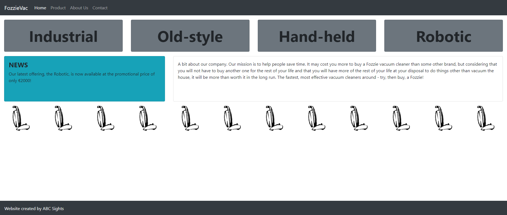

Assignment
Use a text editor to modify the file
index.html so that when opened in a browser it is rendered as in the picture below.
Rules:
- You may add HTML elements for two purposes only:
- to create the navbar at the top of the page
- to add the missing pictures in the sequence of vacuum cleaners
- Use Bootstrap classes to style the remainder of the page, by adding class names to the element class attributes.
- Do not modify the HTML file in any other way.
Tips:
- Use a display-* class for the large text in the top row.
- Use the class fixed-bottom for the element with text 'Website created by ABC Sights'.
